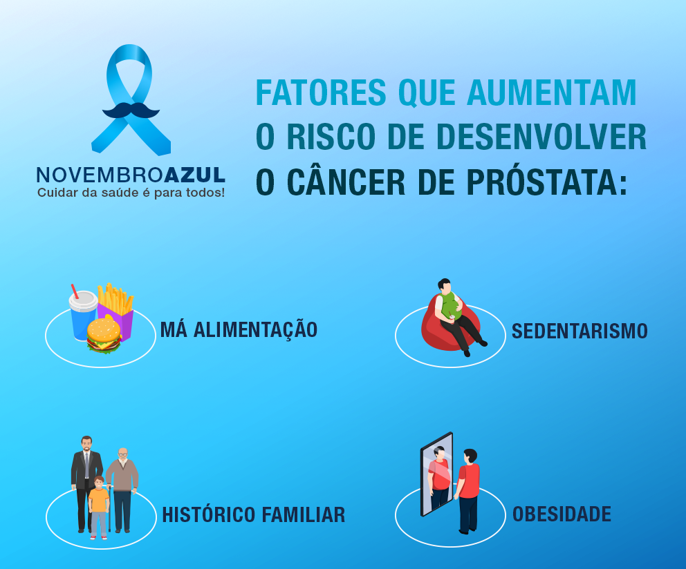

Tratamento e Prevenção
Na fase inicial, o câncer de próstata não apresenta sintomas e quando alguns sinais começam a aparecer, cerca de 95% dos tumores já estão em fase avançada, dificultando a cura. Na fase avançada, os sintomas são: dor óssea, dores ao urinar, vontade de urinar com frequência e presença de sangue na urina e/ou no sêmen.
Entre os fatores de risco estão, histórico familiar de câncer de próstata (pai, irmão e tio); obesidade e raça: homens negros sofrem maior incidência deste tipo de câncer.
A única forma de possibilitar a cura do câncer de próstata é com o diagnóstico precoce. Mesmo na ausência de sintomas, homens a partir dos 45 anos com fatores de risco, ou com 50 anos e sem estes fatores, devem ir ao urologista para conversar sobre o exame de toque retal, que permite ao médico avaliar alterações da glândula, como endurecimento e presença de nódulos suspeitos, e sobre o exame de sangue PSA.
Cerca de 20% dos pacientes com câncer de próstata são diagnosticados somente pela alteração no toque retal, reforçando sua importância para o diagnóstico e o tratamento precoces.
Medidas preventivas, segundo o INCA, incluem: dieta rica em frutas, verduras, legumes, grãos, cereais integrais; menos gordura, principalmente as de origem animal, ajuda a diminuir o risco de câncer, e de outras doenças crônicas não-transmissíveis.
Nesse sentido, outros hábitos saudáveis também são recomendados, como fazer no mínimo 30 minutos diários de atividade física, manter o peso adequado à altura, identificar e tratar adequadamente hipertensão, diabetes e problemas de colesterol, diminuir o consumo de álcool e não fumar.
Fonte: https://bvsms.saude.gov.br/novembro-azul-mes-de-conscientizacao-sobre-a-saude-do-homem/
